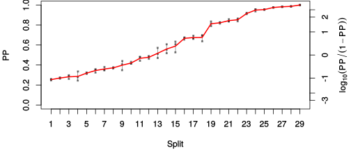

| chain # | burnin | subsample | Iterations (remaining) | command line | subdirectory | directory |
|---|---|---|---|---|---|---|
| 1 | 10000 | 1 | 90000 | /usr/local/bali-phy-3.0-beta2/bin/bali-phy E7_AA_red3_v2_selAll_all4Manatees_PePV1.fas -s 23151 -n E7_AA_red3_v2_selAll_all4Manatees_PePV1_c1 | E7_AA_red3_v2_selAll_all4Manatees_PePV1_c1-1 | /home/willemse/data/trees/BaliPhy/E7/red3_v2 |
| 2 | 10000 | 1 | 90000 | /usr/local/bali-phy-3.0-beta2/bin/bali-phy E7_AA_red3_v2_selAll_all4Manatees_PePV1.fas -s 74843 -n E7_AA_red3_v2_selAll_all4Manatees_PePV1_c2 | E7_AA_red3_v2_selAll_all4Manatees_PePV1_c2-1 | /home/willemse/data/trees/BaliPhy/E7/red3_v2 |
| 3 | 10000 | 1 | 90000 | /usr/local/bali-phy-3.0-beta2/bin/bali-phy E7_AA_red3_v2_selAll_all4Manatees_PePV1.fas -s 43638 -n E7_AA_red3_v2_selAll_all4Manatees_PePV1_c3 | E7_AA_red3_v2_selAll_all4Manatees_PePV1_c3-1 | /home/willemse/data/trees/BaliPhy/E7/red3_v2 |
| P(data|M) = -8106.947 +- 0.875 | Complete sample: 268827 topologies | 95% Bayesian credible interval: 255351 topologies |
Phylogeny Distribution

| Partition support: Summary |
| Partition support graph: SVG |
{kind=link}
| 50% consensus | Newick (+PP) | SVG | |||||
| 66% consensus | Newick (+PP) | SVG | |||||
| 80% consensus | Newick (+PP) | SVG | |||||
| 90% consensus | Newick (+PP) | SVG | |||||
| 95% consensus | Newick (+PP) | SVG | |||||
| 99% consensus | Newick (+PP) | SVG | |||||
| 100% consensus | Newick (+PP) | SVG | |||||
| MAP | Newick (+PP) | SVG | |||||
| greedy | Newick (+PP) | SVG |
{kind=link}
{kind=link}
{kind=link}
{kind=link}
{kind=link}
{kind=link}
{kind=link}
{kind=link}
Alignment Distribution
Partition 1
| Diff | Min. %identity | # Sites | Constant | Informative | ||||
|---|---|---|---|---|---|---|---|---|
| Initial | FASTA | HTML | Diff | 1.68% | 238 | 1 (0.42%) | 177 (74.4%) | |
| Best (WPD) | FASTA | HTML | AU | 1.15% | 742 | 2 (0.27%) | 288 (38.8%) |
Mixing
{kind=link}
{kind=link}
| burnin (scalar) | ESS (scalar) | ESS (partition) | ASDSF | MSDSF | PSRF-CI80% | PSRF-RCF |
|---|---|---|---|---|---|---|
| 956 | 461.2 | 250.381 | 0.017 | 0.056 | 1.002 | 1.009 |
Projection of RF distances for the first 3 chains 3D 3D | Variation of split PPs across chains |
Scalar variables
| Statistic | Median | 95% BCI | ACT | ESS | burnin | PSRF-CI80% | PSRF-RCF |
|---|---|---|---|---|---|---|---|
| prior | -1059 | (-1193, -929.1) | 75.51 | 3575 | 441 | 0.9999 | 1.009 |
| prior_A1 | -1194 | (-1329, -1069) | 71.51 | 3775 | 486 | 1 | 1.009 |
| likelihood | -8048 | (-8102, -7993) | 69.68 | 3874 | 433 | 1.001 | 1.006 |
| logp | -9106 | (-9226, -8994) | 55.46 | 4868 | 654 | 1 | 1.004 |
| Heat.beta | 1 | ||||||
| Scale1 | 20.39 | (15.08, 26.65) | 1.359 | 198683 | 181 | 1 | 1.001 |
| S1.F.pi.A | 0.06132 | (0.05196, 0.07125) | 10.91 | 24752 | 331 | 0.9999 | 1.005 |
| S1.F.pi.R | 0.04416 | (0.03519, 0.05367) | 9.842 | 27435 | 516 | 0.9999 | 0.9998 |
| S1.F.pi.N | 0.03548 | (0.02841, 0.04297) | 9.601 | 28121 | 529 | 0.9998 | 0.9972 |
| S1.F.pi.D | 0.07668 | (0.06542, 0.08869) | 30.21 | 8937 | 727 | 1 | 1.004 |
| S1.F.pi.C | 0.04018 | (0.03068, 0.05082) | 11.81 | 22852 | 372 | 0.9998 | 0.9965 |
| S1.F.pi.Q | 0.04225 | (0.03482, 0.04999) | 8.891 | 30369 | 374 | 1 | 0.997 |
| S1.F.pi.E | 0.08361 | (0.0718, 0.09596) | 14.06 | 19199 | 506 | 1.001 | 0.9972 |
| S1.F.pi.G | 0.08346 | (0.06996, 0.09796) | 12.02 | 22457 | 190 | 1 | 1.005 |
| S1.F.pi.H | 0.02715 | (0.02065, 0.03424) | 9.529 | 28335 | 232 | 0.9999 | 1.004 |
| S1.F.pi.I | 0.0382 | (0.03089, 0.04585) | 12.01 | 22490 | 516 | 1 | 0.9984 |
| S1.F.pi.L | 0.08329 | (0.07011, 0.09734) | 14.5 | 18621 | 399 | 1 | 0.9978 |
| S1.F.pi.K | 0.02595 | (0.02001, 0.03247) | 10.96 | 24642 | 438 | 1 | 0.9959 |
| S1.F.pi.M | 0.0082 | (0.005095, 0.01172) | 8.565 | 31522 | 363 | 1 | 1.002 |
| S1.F.pi.F | 0.03853 | (0.02999, 0.04766) | 15.45 | 17476 | 397 | 1 | 0.9981 |
| S1.F.pi.P | 0.06651 | (0.05437, 0.07905) | 28.07 | 9620 | 409 | 1.002 | 0.999 |
| S1.F.pi.S | 0.08219 | (0.07131, 0.09335) | 9.232 | 29246 | 241 | 1 | 1.002 |
| S1.F.pi.T | 0.06141 | (0.05162, 0.07172) | 8.338 | 32383 | 409 | 0.9999 | 1.001 |
| S1.F.pi.W | 0.007751 | (0.00394, 0.01241) | 9.626 | 28048 | 279 | 0.9998 | 1 |
| S1.F.pi.Y | 0.0287 | (0.02079, 0.03706) | 61.62 | 4381 | 352 | 1 | 0.995 |
| S1.F.pi.V | 0.06212 | (0.0515, 0.07271) | 119.6 | 2256 | 824 | 1.001 | 1.005 |
| I1.RS07.meanIndelLengthMinus1 | 3.726 | (2.811, 4.751) | 68.42 | 3946 | 815 | 1 | 1.003 |
| I1.RS07.logLambda | -3.459 | (-3.715, -3.213) | 25.69 | 10511 | 141 | 0.9997 | 1.005 |
| |A1| | 637 | (561, 709) | 585.4 | 461 | 956 | 0.9931 | 1.006 |
| #indels1 | 163 | (139, 186) | 68.04 | 3968 | 484 | 0.989 | 1.007 |
| |indels1| | 818 | (697, 946) | 41.94 | 6437 | 790 | 0.9939 | 1.001 |
| #substs1 | 1487 | (1423, 1547) | 464.1 | 581 | 891 | 0.9836 | 1.005 |
| Scale1*|T| | 26.53 | (24.3, 28.95) | 16.61 | 16251 | 262 | 1 | 1.001 |
| |A| | 637 | (561, 709) | 585.4 | 461 | 956 | 0.9931 | 1.006 |
| #indels | 163 | (139, 186) | 68.04 | 3968 | 484 | 0.989 | 1.007 |
| |indels| | 818 | (697, 946) | 41.94 | 6437 | 790 | 0.9939 | 1.001 |
| #substs | 1487 | (1423, 1547) | 464.1 | 581 | 891 | 0.9836 | 1.005 |
| |T| | 1.302 | (0.9663, 1.678) | 1.001 | 269615 | 157 | 1 | 1.002 |